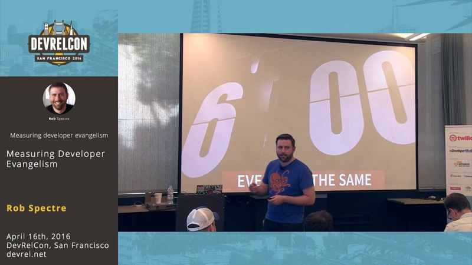
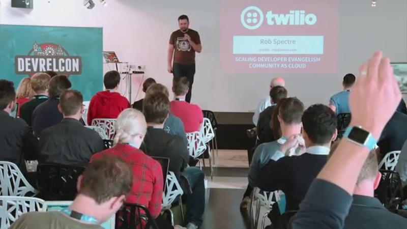

Brooklyn, New York · Builder
I build software that keeps kids safe online.
A thirteen-year veteran of SugarCRM, Boxee and Twilio, where I led developer evangelism. Today I'm the founder and CEO of childsafe.ai.
Currently — Founder & CEO, childsafe.ai
A word from Rob
Hi — I'm Rob.
I've spent thirteen years shipping software at startups — SugarCRM, Boxee (whose technology Samsung acquired), and Twilio, where I led developer evangelism. Somewhere in those years I learned the thing that still runs my life.
“Developers have the greatest reach that humanity has ever seen.”
A software engineer by trade and a historian by training, I later spent a year as a technical consultant for counter–human-trafficking units across the United States. What I learned from those law-enforcement partners I couldn't walk away from.
So I founded childsafe.ai to build machine-learning software that starves the macroeconomy fueling modern slavery of its wealth, anonymity, and distribution. It is the hardest and most worthwhile thing I have ever pointed a compiler at.
When I'm not doing that, I play in a punk rock band, ship small strange things on GitHub, and remain the loudest Red Sox fan in New York. Enjoy yourself — it's later than you think.
— Rob
Founder & CEO, childsafe.ai · formerly Twilio · Boxee · SugarCRM
Track record
Thirteen years shipping software.
Years shipping software
13
Since the startup trenches
Chapter 01
SugarCRM
Software
Chapter 02
Boxee
Acquired by Samsung
Chapter 03
Twilio
Developer Evangelism
Chapter 04
childsafe.ai
Now
A software engineer by trade, a historian by training — now building for the people the internet forgets.
What I'm building now
Small, strange, and shipped.
The work that matters
childsafe.ai — the world's first AI platform built to combat online child abuse.
What it protects
Kids, from predators, at the exact moment they are most at risk.
What it does
Monitors online conversations and intercepts them when a child is about to be sold for sex.
How
Chatbots and decoy text messages that deter buyers — before a transaction can happen.
The mission
Machine learning that starves the trade of its wealth, anonymity, and distribution.
Before childsafe.ai, Rob spent a year embedded as a technical consultant with counter–human-trafficking units across the United States.
Talks & media
On stage, on the record — a decade of talks, shipped in the open.
From leading developer evangelism at Twilio to making the case for AI that protects children, Rob has been building in public for years. Press play — each one loads right here.

Measuring Developer Evangelism
Scaling Developer Evangelism Can AI Play Fantasy Football? Ten Top LLMs Go Head-to-HeadFrom the speaking archive
Twenty-seven talks, in tasty hacker-friendly form.
- Scaling Developer Evangelism
- Measuring Developer Evangelism
- Building High Performance Technical Teams
- With Great Power
- Getting Started With APIs
- Writing Writable APIs the Write Way
- SMS For Humans: NLP & Python for Text Interfaces
- Upgrade Your Toolkit With The Power Of Voice
- Bleed for Speed: Rapid Prototyping in Django
- You Don’t Have Time (Not) To Test
- Product Oriented Architecture
- Mobile App Distribution via SMS
- Crapping Rainbows with PhoneGap
- We Were Promised Jetpacks: Intro to Android Wear
- Kicking the Tires of Google App Engine
- Intro to LimeJS
- Open Source Television
- Boxee for Hackers
- Hackathons Are For Hacking
- How To Crush Your Hackathon Demo
- How To Take Second Place at a Hackathon
- How To Change The World In A Weekend
- How To Make A Natural Disaster Punkcam
- Intro to Programming
- Learn Brogramming the Hard Way
- Your Execution Year
- Twilio Karaoke
How I work
Reach
Developers have the greatest reach humanity has ever seen. I try to point mine at something that matters.
Craft
A software engineer by trade, a historian by training. Ship the thing, then ship it better.
Purpose
The best code I've written exists to take wealth, anonymity, and distribution away from people who hurt children.
Mischief
A punk band on the weekends, strange small projects on GitHub, and the loudest Red Sox cheering in New York. Enjoy yourself — it's later than you think.
Say hello
Find me where I actually am.
I read what people send me. Real notes get real replies.